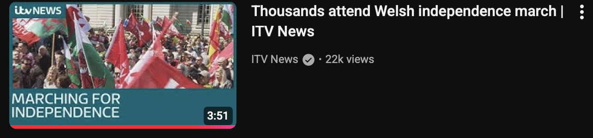
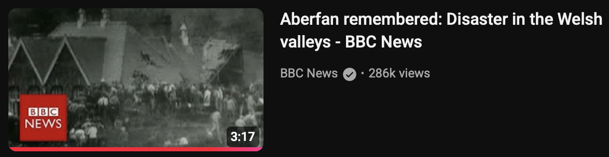

Group member: Candan Savk
1. Project summary
3–5 sentences: what your report is about, where it takes place, what you can document, and what “live” means for your project.
2. Context and background
- Key facts (3–6 bullets)
- Key terms (3–6 short definitions)
- Links to organisers / official pages / public information
3. Case studies and inspirations (2–4)
Use screenshots + links to the original source. Explain what you learned from each example.
Case study 1: Title
Link: https://...
What we learned (3–5 lines): structure, tone, evidence, ethics, how context is added.

Screenshot credit + source link.
Case study 2: Title
Link: https://...
What we learned (3–5 lines): what we will adopt, and what we will avoid.

Screenshot credit + source link.
4. Planning and method
- Format: video / audio / written updates / mixed media
- Location plan: where you will report from and why
- Shot plan: wide / medium / close / cutaways
- Interviews (optional): who, why, consent plan
- Verification: what counts as evidence and how you will check it
Planning image 1 (optional)
A map, floorplan, storyboard frame, or location screenshot.

Image credit + source link (if applicable).
Planning image 2 (optional)
A shot list photo, equipment setup, or diagram of camera position.

Image credit + source link (if applicable).
5. Process and drafts
- What you filmed (short log)
- What is missing / what you still need
- Edit plan: beginning / middle / end + any on-screen text needed
- Ethics and safety notes: consent, access limits, risk plan
Audio note (optional)
A short reflection, ambient sound, or an interview test recording.
Audio credit + date (and consent note if relevant).
6. References and credits
Group member: Joy Jimmy
1. Project summary
My live report focuses on the BFI Flare: London LGBTQIA+ Film Festival, one of the UK’s largest LGBTQIA+ film events. It takes place in London, primarily at BFI Southbank. I will document screenings, events, audience reactions, and the overall atmosphere of the festival through video and photography. For this project, “live” means capturing events as they happen in real time, including immediate observations, interviews, and director Q&As.
2. Context and background
- British Film Institute hosts BFI Flare annually during the spring, it’s the 40th anniversary of BFI Flare.
- The festival celebrates LGBT stories in global cinema.
- It includes premieres, rereleases, workshops, exhibitions panel discussions, DJ nights and filmmaker Q&As.
- It attracts international filmmakers and diverse audiences.
- It is one of the most prominent queer film festivals in Europe. Key Terms
- Official BFI Flare page: https://www.bfi.org.uk/flare
- BFI homepage: https://www.bfi.org.uk
- Festival programme: https://whatson.bfi.org.uk/flare
Live reporting: Real-time documentation of events as they unfold.
Documentary evidence: Verifiable media such as photos, video, or audio recordings.
Audience reception: How viewers respond to films (emotionally or critically).
Ethics in media: Respecting consent, privacy, and accurate representation.
Curation: The selection and organisation of films within the festival.
Useful Links
3. Case studies and inspirations (2–4)
Case Study 1: TikTok Film & Culture Live Event Coverage
Social media platforms prioritise immediacy. Live reporting here is fast and visuals often using vertical video and quick edits. The tone is informal and personal, making it accessible. Context is often minimal, so creators must balance speed with accuracy. Why it helps your project: You can adopt short clips, quick edits and make your report feel current and casual.
Case Study 2: Pop Crave (Social Media Live Reporting)
Link: https://... Link: https://...
What we learned: Pop Crave represents a new form of live reporting driven by speed and social media immediacy. It posts short, frequent updates about pop culture events, often breaking news faster than traditional outlets. Its structure is minimal usually just a single sentence headline and video which makes information easy to consume quickly. It often aggregates information from other sources while linking back to them, showing how digital reporting can be collaborative.
Screenshot credit + source link.
4. Planning and method
- Format: Recording on phone with a wireless small microphone (video with Voiceover narration and on-screen text)
- Location plan: Filming in Queer Britain, BFI Southbank, Waterloo and St Pancras station. To capture the journey taken from Egham to London. The atmosphere of the day trying to find my way around the different location and situating myself amongst the other audience members.
- Shot plan: \Wide shots: Train station, underground, video of BFI IMAX building, walking into BFI Southbank, video of the workshops and panel work, exterior of the venue Medium shots: audience questions and red carpet space Close-ups: Filmmakers and directors’ speech/intro before the film Interviews: ask consent before filming prepare what to say to gain consent including informing of the intended use.
Planning image 1 (optional)
A map, floorplan, storyboard frame, or location screenshot.
Image credit + source link (if applicable).
Planning image 2 (optional)
A shot list photo, equipment setup, or diagram of camera position.
Image credit + source link (if applicable).
5. Process and drafts
- What I filmed: Journey to BFI Southbank, including street footage at Exterior shots of the venue and festival environment short clips of the screening (where permitted)
- What is missing: Audience interviews to provide additional insight More close-up shots of the screening experience Greater variety of interior footage to enhance visual storytelling
-
Edit plan:
Beginning: Journey to the festival and introduction to BFI Flare: London LGBT Film Festival
Middle: Observational footage of the venue, audience, and screening environment
End: Reflection using voiceover narration
Editing was completed using DaVinci Resolve.
A minimal editing style was used to preserve the authenticity of the live experience.
Limited on-screen text was included for clarity, along with subtitles where audio quality was weaker. A voiceover was added to provide context and guide the audience through the footage. -
Permission to film within the venue and during the event was
checked in advance
Consent would be obtained for any interviews conducted
Filming was done from a respectful distance (e.g. sitting towards the back) to avoid disrupting the screening
Phone brightness was kept low to minimise distraction
6. References and credits
- British Film Institute, BFI Flare: London LGBTQIA+ Film Festival 2026 – Official Programme, 2026. https://whatson.bfi.org.uk/flare Link
- British Film Institute, BFI Flare 2026 Full Programme Announcement, 2026. Link
- British Film Institute, About BFI Flare Festival, 2026 Full Programme Announcement, 2026. Link
- British Film Institute, Closing Night & Special Presentation Announcement, 2026. Link
Group member: Tyler
1. Project summary
I will be reporting on the festivities around St. Davids day, the National Day of Wales on February 1st. The day is celebrated in honour of the Welsh patron saint (St David) who died on this day back in 589 AD. I will be filming the events and activities in Cardiff Bay where I plan on documenting the events from traditional Welsh choir singing to food stalls. I plan on taking a historical tour about Welsh artifacts as well as history stories. 'Live' for me will mean amercing myself into the history of my country and sharing my culture and heritage publicly.
2. Context and background
- Key facts (3–6 bullets)
- Want to introduce my heritage into my academic studies
- 1880's Cardiff was the port that delt with the most coal world wide
- Wales are trying to push to be known by its name in its native language
- Wales is known as the 'land of song' and has produced many world famous singers, writers and poets
- Key terms (3–6 short definitions)
- Cymru – Wales's name in the Welsh language
- Senedd – the Welsh parliamentary building
- Picen ar y man – Welsh cakes
3. Case studies and inspirations (2–4)
Use screenshots + links to the original source. Explain what you learned from each example.
Case study 1: Thousands attend Welsh independence march | ITV News
Link: https://www.youtube.com/watch?v=GclhKLBd2YU
I learned that from an interview style live report having clear pre-prepared questions makes the interviews go smoothly. And giving the audience a point to think about then backing it up with interviews relating to the point leads the audience to easily follow along whilst supplying evidence. The way ITV kept to the point only asking relevant questions led to the video being engaging for its entirety. The report had a clear start, middle and ending to it keeping the structure easy to follow. To ethically report on a debatable topic (Welsh independence) you mustn't give a one sided view and the way the report was structured gave both pros and cons to the discussion allowing the viewer to come to their own decision.

Screenshot credit
Case study 2: Aberfan remembered: Disaster in the Welsh valleys - BBC News
Link: https://www.youtube.com/watch?v=AqZns_Cj0aY
I learned that whilst reporting on a sensitive topic you should speak in a flat tone so as not to come across poorly, as some events have and still continue to cause distress. Therefore try to avoid sounding too eager to report on negative events. Whilst presenting historical events it's important to keep the viewer as educated as possible and one way to achieve this is to clearly state dates of key events.

Screenshot credit
4. Planning and method
- Format: video / audio / written updates / mixed media
- I plan to have a video format with a voice over if required
- Location plan: where you will report from and why
- I plan on reporting from Cardiff bay as Cardiff being the capitol of Wales there should be more events going on
- Interviews (optional): who, why, consent plan
- I don't plan on conducting any interviews but if I do I will ask consent for the participant to A) be consenting on video and B) be consenting with the use of their voice. I will also be able to offer a voice distortion effect over their voice if they so wish.
- Verification: what counts as evidence and how you will check it
Planning image 1
A map, floorplan, storyboard frame, or location screenshot.

Google Maps. My plan is to arrive at Cardiff Bay train station and walk around the bay finding St. Davids day celebrations. I will then head to the Senedd where they are offering tours where I can learn and document about the history of Wales, Cardiff and Dewi Sant. After that I will head to the millennium centre to see what events they have put on.
5. Process and drafts
- What you filmed (short log)
- Choir singing
- Craft stalls
- Senedd tour
- Art exhibit
- What is missing / what you still need
- Voiceover as I did not get consent to record others
- Edit plan: beginning / middle / end + any on-screen text needed
- Beginning – intro to where I am and what I am doing, filmed when I arrive into Cardiff
- Middle – footage of the events and activities going on around Cardiff bay with a voiceover explaining what is going on and the history behind it
- End – a conclusion ending with a proud cultural moment such as food tasting or important song
- Ethics and safety notes: consent, access limits, risk plan
- As the Senedd is a government building security is tight and the use of large electronic equipment such as cameras and laptops are prohibited — because of this I was required to film on my phone and leave my camera and microphone with security.
- As I was doing this alone I had to be careful not to cause a nuisance to others as it may have left me in a vulnerable position regarding my safety.
Audio notes
Microphone quality check
Brief overview
6. References and credits
- Y Senedd. https://senedd.wales
- St Davids Day with the Senedd. Link
- Cardiff and coal. https://www.cardiffharbour.com/history/
- Wales: land of song. BBC Travel
- Songs 1 & 2: Gorws Gwefrau Da
Group member: Yvette Hupje
1. Project summary
My live report is on the Malá Inventura art festival which takes place annually in various venues across Prague, Czechia. Live, within the context of my project, refers to the live artistic performance events which are not recorded. I attended an opera performance entitled "Proč je taková?" ("Why is She Like This?"), based on the true story of Rosemary Kennedy, the sister of US President John F. Kennedy, who was lobotomised as a result of her "uncontrollable" nature.
2. Context and background
- Malá Inventura is an annual festival of contemporary and experimental theatre, taking place each February. The name translates to "small inventory", reflects the festivals role as a snapshot or stocktake of emerging contemporary experimental and interdisciplinary theatre.
- The programme mainly consists of premieres, interdisciplinary work, and performance art.
- It takes place across about 16 venues in Prague and the events are spread across several days which encourages audiences to move around the city.
- The festival centres emerging and independent artists and is funded by Nová síť and the local authorities. It features the most significant premieres of the past year, and allows for discussions, networking, and workshops. This also allows local audiences to enjoy performances that go beyond traditional ideas of theatre and dance.
3. Case studies and inspirations
Case study 1: Vice's Cultural Reporting
Link: Link to video of reference
Vice's reporting puts the viewer directly inside the event, and uses handheld footage and minimal narrartion to create a sense of immediacy. The filming style allows for a strong sense of the atmosphere and features informal interviews. I found these reportings useful for capturing the "live" feeling of a space.

Screenshot credit + source link.
Case study 2: Arte Track: Short Arts Documentaries
Link: Link to Arte Tracks' YouTube
Arte Tracks makes complex and niche cultural topics and events accessibly in visually engaging way. The handheld camera and shots of travelling to the local area help to contextualise the artists they cover, and I find the combination of this footage and minimal editing and voiceover very engaging and effective in communicating ideas without over-explaining. I attempt to adopt this balance in my live report.

Arte Tracks video
Unmarked: The Politics of Performance by Peggy Phelan
Link: Link to book
Phelan states that "Performance cannot be saved, recorded, documented, or otherwise participated in the circulation of representations of representations: once it does so, it becomes something other than performance" (p.146). I used to guide my research and had in mind during my recording.

Screenshot credit + source link.
4. Planning and method
- Since the event took place in Prague, I had to ensure to buy plane and event tickets in advance.
- The format I chose was mixed media including videos of the performance, photographs, and some ambient audio and audio of the performance.
- For the location, I initially planned on recording multiple venues across Prague to demonstrate movement across the spaces rather than a single location. However due to some delays in my flight I was only able to attend the final performance during the festival.
- Shot plan: I planned for wide shots, showing streets, exterior and interior or the venue(s) and audience flow. Close shots would be any details I find interesting during the performance.
- On verification, I documented only the events I attended, checking programme details with the festival listings and using original footage as primary evidence.
Venue location

Venue of the performance, located in a quiet suburb of Prague.
Ticket

Ticket for entrance into the venue
5. Process and drafts
- I filmed my journey to the venue, capturing the streets of Prague on weekend night. I filmed short clips of the venue and of the performance as I was permitted to film.
- I would have liked to get more interviews with the audience, and maybe closer shots of the performance in retrospect.
- I edited minimally using Da Vinci Resolve, with little on screen text for clarity and subtitles when the audio quality is lacking. I used a voiceover to narrate over the performance.
- I had checked beforehand and it is permitted to film the venue and the performance, but and I ensured that I would get consent for interviews and avoided disrupting performances for the audience by sitting at the back and ensuring my phone brightness was low. I remained observational rather than intrusive.
- Additionally, being in a foreign country comes with unique risks, so I ensured to travel with another person to attend the event with me as it took place late in the evening.
Audio note
A short reflection.
Audio credit: Yvette Hupje, recorded March 1st 2026.